CULTURAL HERITAGE
Vietnam’s cultural heritage is a colorful mosaic shaped by thousands of years of history, dynasties, trade routes, and traditions passed from one generation to another. From sacred temples and imperial cities to vibrant festivals and handcrafted arts, every corner of the country reflects the stories and values of its people.
Exploring Vietnam’s heritage is more than sightseeing. It is an experience that connects travelers to ancient beliefs, community traditions, and artistic expressions that continue to thrive today.
Traditional Festivals and Celebrations
Festivals in Vietnam are lively cultural events that bring communities together. These celebrations blend spirituality, history, food, music, and colorful traditions. Tourists visiting during these festivals can experience the joyful energy that fills Vietnamese streets, temples, and villages.
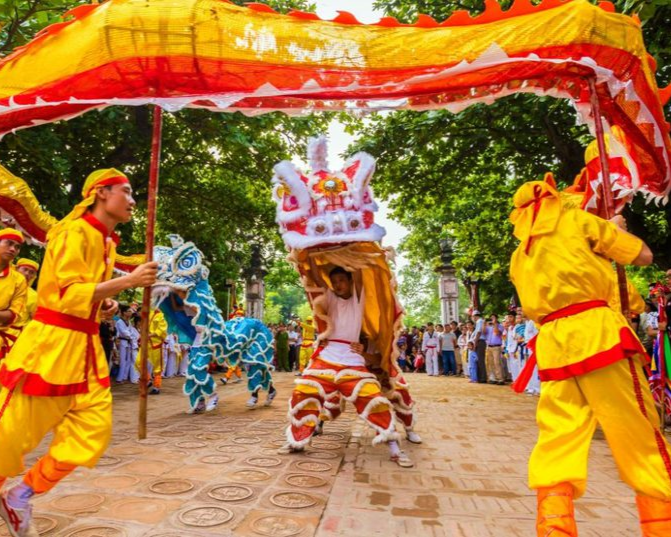
Tet (Lunar New Year)
Tet is the most important holiday in Vietnam. Families reunite, homes are decorated with peach blossoms and kumquat trees, and ancestors are honored through traditional offerings. Streets become vibrant with dragon dances, fireworks, and festive markets. Visitors during Tet can witness the deep family values and spiritual traditions that shape Vietnamese culture.
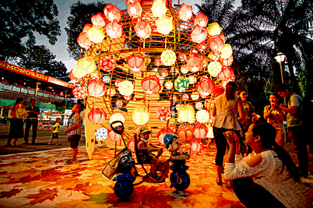
Mid-Autumn Festival (Tet Trung Thu)
Often called the Children’s Festival, this event celebrates the harvest moon with lantern parades, lion dances, and delicious mooncakes. Streets glow with colorful lanterns shaped like animals, stars, and mythical creatures while children sing and parade through neighborhoods.
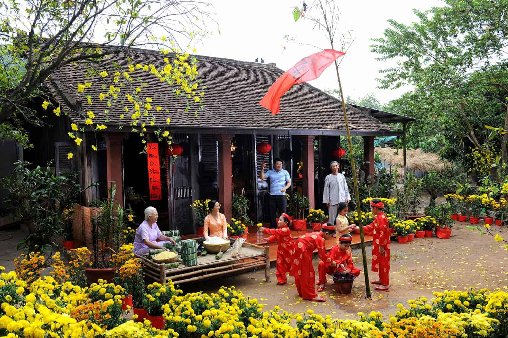
Village Festivals
Many Vietnamese villages celebrate their own local festivals dedicated to heroes, harvest seasons, or guardian deities. Activities may include boat races, traditional games, ceremonial dances, and musical performances. These events provide visitors with a genuine look at community life and rural traditions.
Historical Sites and Ancient Architecture
Vietnam’s landscape is dotted with magnificent historical landmarks that reflect the influence of emperors, religions, and foreign cultures. These structures serve as living reminders of the country’s political, spiritual, and artistic evolution.
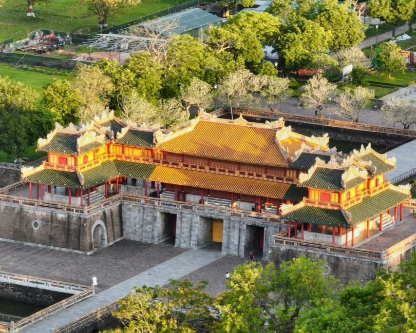
Imperial Cities
The Imperial City of Hue stands as one of Vietnam’s most significant historical sites. Surrounded by massive walls and a protective moat, the complex contains palaces, temples, and royal courtyards built according to feng shui and Confucian philosophy. Walking through its gates feels like stepping into the era of Vietnamese emperors.
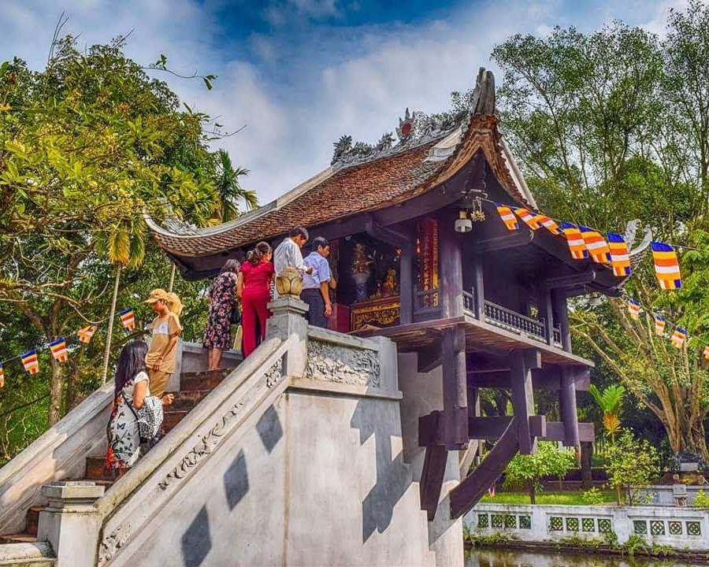
Ancient Temples and Pagodas
Temples and pagodas across Vietnam represent the deep spiritual roots of the nation. Landmarks such as the One Pillar Pagoda and Tran Quoc Pagoda in Hanoi are not only religious sites but also architectural masterpieces reflecting Buddhist philosophy and harmony with nature.
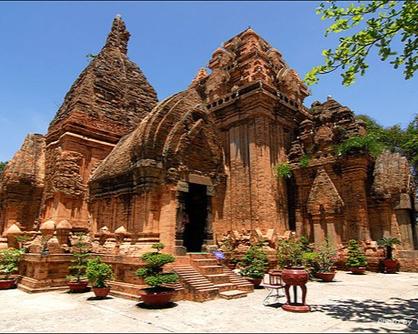
Cham Civilization Ruins
My Son Sanctuary showcases ancient brick temples constructed by the Champa civilization between the 4th and 14th centuries. Detailed carvings of Hindu gods, mythical animals, and sacred symbols reveal the artistic brilliance and religious devotion of the Cham people.
Traditional Arts and Crafts
⭐ Performing Arts
|
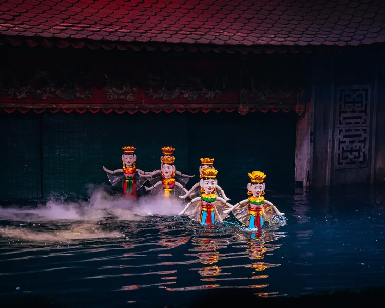 Water PuppetryOriginating from the Red River Delta, water puppetry is one of Vietnam’s most unique performing arts. Puppets glide across water stages while musicians play traditional instruments. The performances tell stories of village life, farming traditions, and legendary heroes. |
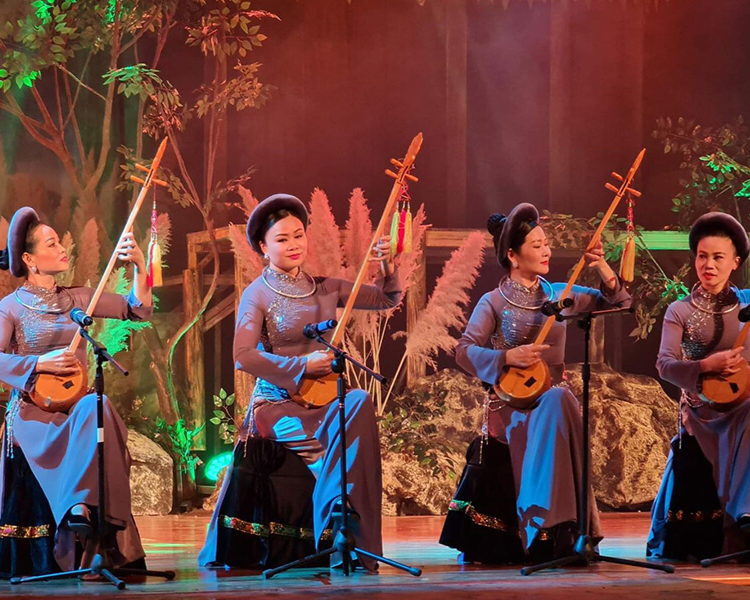 Folk MusicTraditional musical forms such as Ca Tru, Quan Ho, and Hat Boi combine poetic storytelling with melodic singing. These performances are often featured during cultural festivals and ceremonial events. |
⭐ Craft Villages
|
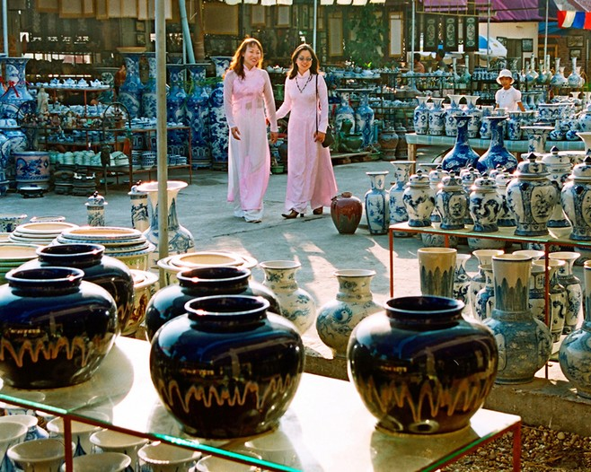 Bat TrangFamous for handcrafted ceramics and pottery. |
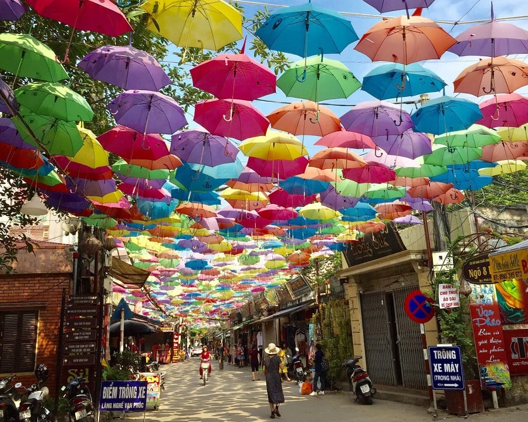 Van PhucKnown for producing elegant Vietnamese silk. |
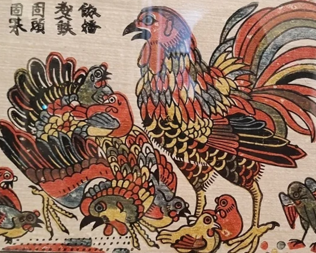 Dong HoTraditional woodblock paintings reflecting folk beliefs. |
⭐ Experiential Tourism
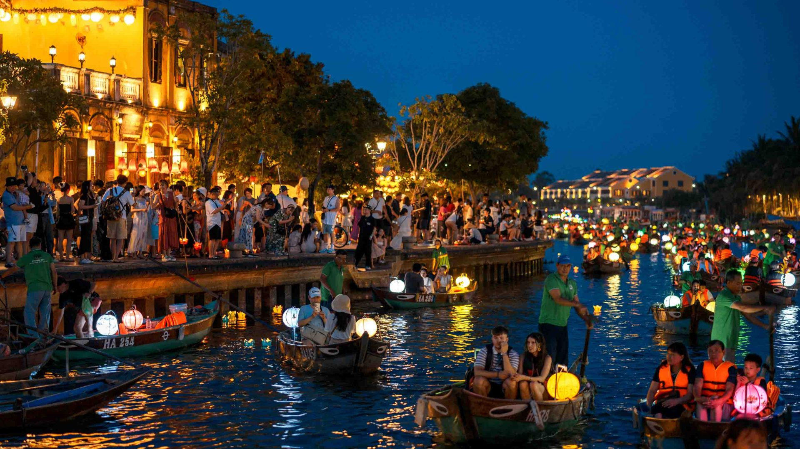
Visitors can participate in hands-on workshops in craft villages, learning pottery, silk weaving, or painting techniques directly from local artisans. These experiences not only create memorable souvenirs but also support the preservation of Vietnam’s cultural traditions.